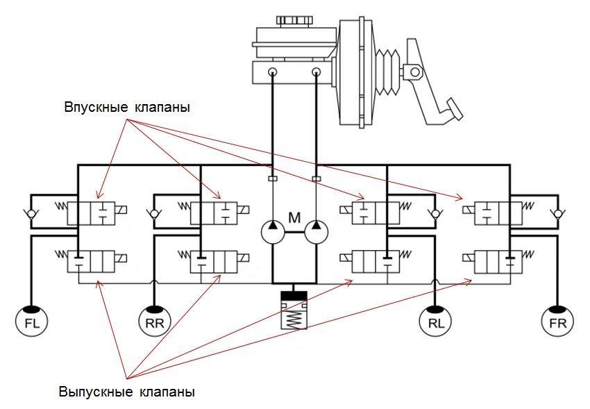

Принцип работы системы

Антиблокировочная система тормозов выполняет свою работу циклически, при этом каждый цикл состоит из трех фаз:
- Увеличение давления (водителем). Торможение происходит в нормальном режиме, давление в системе повышается за счет нажатия водителем на педаль тормоза. Впускные клапана гидроблока открыты, выпускные закрыты. Если скорость вращения колеса слишком интенсивно замедляется и превышает определенное значение, то блок управления ABS переводит впускной клапан в положение «закрыто», выпускной также закрыт. Система переходит в следующую фазу.
- Удержание давления. На данном этапе система АБС как бы «отрезает» главный тормозной цилиндр от процесса торможения, и в контуре «гидравлический блок — рабочий тормозной цилиндр колеса» поддерживается постоянное давление. Даже если водитель начнет нажимать на педаль тормоза дальше, давление увеличиваться не будет. В этом режиме торможение происходит при максимальной тормозной силе, то есть наиболее эффективно. Блок управления продолжает контролировать скорость вращения колес, и если она уменьшится ниже допустимого порога, то есть возникнет угроза блокировки колес, поступит команда на открытие выпускного клапана и сброс давления.
- Сброс давления. В этой фазе открывается выпускной клапан, и давление резко понижается. Сначала жидкость попадает в гидроаккумулятор, далее откачивается насосом обратно в ГТЦ. Впускной клапан продолжает находиться в закрытом положении. После того, как скорость замедления колес вернется к допустимым значениям, выпускной клапан закрывается. Открывается впускной клапан, и цикл начинается с начала.
Обратите внимание: Существует довольно распространенное заблуждение, что ABS самостоятельно повышает давление в тормозной системе. На самом деле это не так, если речь идет о системе АБС в ее чистом виде (без ESP). Давление в ней повышается исключительно за счет действий водителя.
Данный цикл работы антиблокировочной тормозной системы автомобиля воспроизводится, пока не завершится торможение, и может повторяться около 6 раз в секунду. Отметим, что срабатывание ABS происходит при экстренном (резком) торможении. Отключить систему АБС нельзя без вмешательств в конструкцию автомобиля, так как приостановка ее работы может привести к трагическим последствиям (потому не предусмотрена автопроизводителями).
Отметим, что ABS интегрируется в штатную тормозную систему автомашины, не изменяя ее конструктивно. Если антиблокировочная тормозная система автомобиля неисправна, на панели приборов загорится соответствующий индикатор (контрольная лампа).